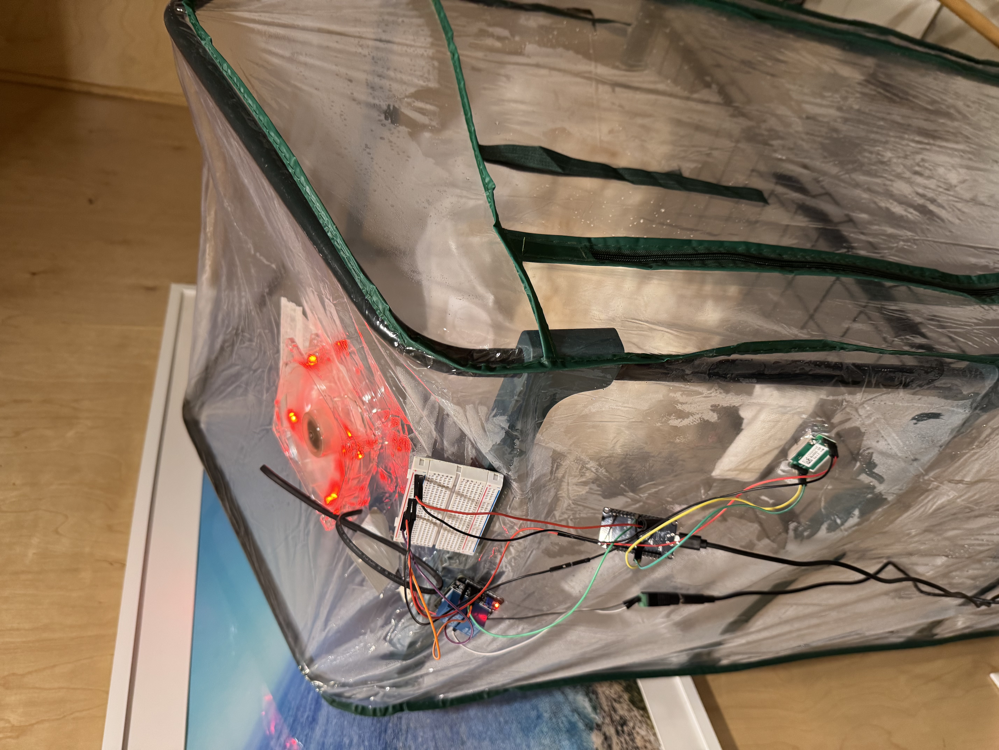
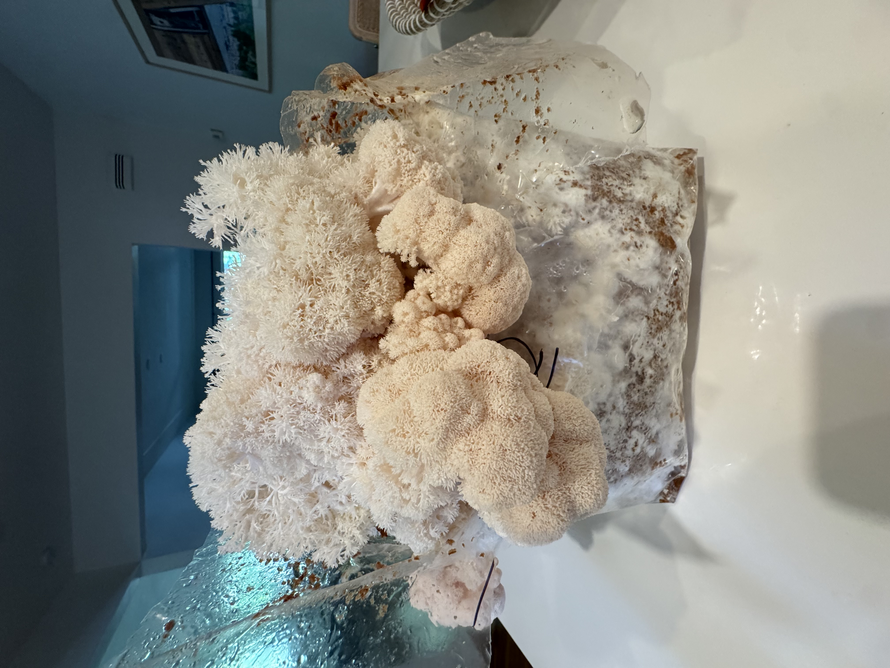

fungal microclimate regulator
ESP32-Based IoT System for Environmental Control


Built an ESP32-based control system integrating sensors with MOSFET drivers for real-time temperature, humidity, and CO₂ regulation. Designed specifically for Lion's Mane and King Oyster mushrooms, it dynamically controls airflow based on real-time sensor data.
key features
- ESP32 microcontroller with Wi-Fi telemetry and real-time control.
- C/C++ firmware for sensor polling, humidity control, and OLED status display.
- MOSFET driver integration for fan and environmental control.
- ThingSpeak telemetry and a GitHub Pages dashboard for remote monitoring.